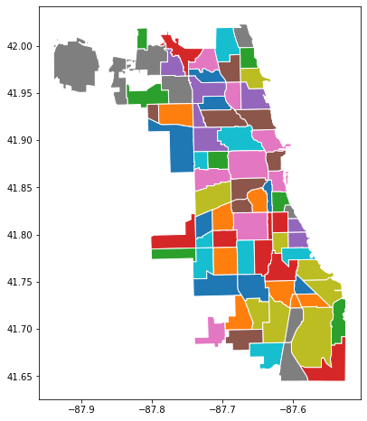

This page was generated from notebooks/ward.ipynb.
Interactive online version:

Ward¶
[1]:
import warnings
warnings.filterwarnings('ignore')
[2]:
import sys
sys.path.append("../")
import spopt
[3]:
import numpy as np
import libpysal
import geopandas as gpd
[4]:
from spopt import WardSpatial
Airbnb Spots Clustering in Chicago¶
Cluster 77 communities into 8 regions using Ward linkage with a spatial connectivity constraint.
[40]:
pth = libpysal.examples.get_path('airbnb_Chicago 2015.shp')
chicago = gpd.read_file(pth)
chicago
[40]:
| community | shape_area | shape_len | AREAID | response_r | accept_r | rev_rating | price_pp | room_type | num_spots | ... | crowded | dependency | without_hs | unemployed | income_pc | harship_in | num_crimes | num_theft | population | geometry | |
|---|---|---|---|---|---|---|---|---|---|---|---|---|---|---|---|---|---|---|---|---|---|
| 0 | DOUGLAS | 46004621.1581 | 31027.0545098 | 35 | 98.771429 | 94.514286 | 87.777778 | 78.157895 | 1.789474 | 38 | ... | 1.8 | 30.7 | 14.3 | 18.2 | 23791 | 47 | 5013 | 1241 | 18238 | POLYGON ((-87.60914 41.84469, -87.60915 41.844... |
| 1 | OAKLAND | 16913961.0408 | 19565.5061533 | 36 | 99.200000 | 90.105263 | 88.812500 | 53.775000 | 1.850000 | 20 | ... | 1.3 | 40.4 | 18.4 | 28.7 | 19252 | 78 | 1306 | 311 | 5918 | POLYGON ((-87.59215 41.81693, -87.59231 41.816... |
| 2 | FULLER PARK | 19916704.8692 | None | 37 | 68.000000 | NaN | 91.750000 | 84.000000 | 1.833333 | 6 | ... | 3.2 | 44.9 | 26.6 | 33.9 | 10432 | 97 | 1764 | 383 | 2876 | POLYGON ((-87.62880 41.80189, -87.62879 41.801... |
| 3 | GRAND BOULEVARD | 48492503.1554 | 28196.8371573 | 38 | 94.037037 | 83.615385 | 92.750000 | 119.533333 | 1.533333 | 30 | ... | 3.3 | 39.5 | 15.9 | 24.3 | 23472 | 57 | 6416 | 1428 | 21929 | POLYGON ((-87.60671 41.81681, -87.60670 41.816... |
| 4 | KENWOOD | 29071741.9283 | 23325.1679062 | 39 | 92.542857 | 88.142857 | 90.656250 | 77.991453 | 1.615385 | 39 | ... | 2.4 | 35.4 | 11.3 | 15.7 | 35911 | 26 | 2713 | 654 | 17841 | POLYGON ((-87.59215 41.81693, -87.59215 41.816... |
| ... | ... | ... | ... | ... | ... | ... | ... | ... | ... | ... | ... | ... | ... | ... | ... | ... | ... | ... | ... | ... | ... |
| 72 | MOUNT GREENWOOD | 75584290.0209 | 48665.1305392 | 74 | NaN | NaN | NaN | NaN | NaN | 0 | ... | 1.0 | 36.8 | 4.3 | 8.7 | 34381 | 16 | 1233 | 326 | 19093 | POLYGON ((-87.69646 41.70714, -87.69644 41.706... |
| 73 | MORGAN PARK | 91877340.6988 | 46396.419362 | 75 | 85.500000 | 96.666667 | 97.000000 | 67.933333 | 1.000000 | 5 | ... | 0.8 | 40.3 | 10.8 | 15.0 | 27149 | 30 | 3998 | 912 | 22544 | POLYGON ((-87.64215 41.68508, -87.64249 41.685... |
| 74 | OHARE | 371835607.687 | 173625.98466 | 76 | 83.500000 | 100.000000 | 83.000000 | 38.500000 | 2.500000 | 2 | ... | 3.6 | 30.3 | 10.9 | 7.1 | 25828 | 24 | 3423 | 1011 | 12756 | MULTIPOLYGON (((-87.83658 41.98640, -87.83658 ... |
| 75 | EDGEWATER | 48449990.8397 | 31004.8309456 | 77 | 94.429530 | 85.925676 | 94.540323 | 77.199510 | 1.582353 | 170 | ... | 4.1 | 23.8 | 9.7 | 9.2 | 33385 | 19 | 4559 | 1409 | 56521 | POLYGON ((-87.65456 41.99817, -87.65456 41.998... |
| 76 | EDISON PARK | 31636313.7864 | 25937.226841 | 9 | 100.000000 | 95.000000 | 91.000000 | 25.000000 | 1.000000 | 1 | ... | 1.1 | 35.3 | 7.4 | 6.5 | 40959 | 8 | 537 | 104 | 11187 | POLYGON ((-87.80676 42.00084, -87.80676 42.000... |
77 rows × 21 columns
[41]:
chicago.plot(column='community', categorical=True, figsize=(12,8), edgecolor='w')
[41]:
<AxesSubplot:>

[37]:
attrs_name = ['num_spots']
w = libpysal.weights.Queen.from_dataframe(chicago)
n_clusters = 8
[38]:
model = WardSpatial(chicago, w, attrs_name, n_clusters)
model.solve()
chicago['ward_new'] = model.labels_
[39]:
chicago.plot(column='ward_new', categorical=True, figsize=(12,8), edgecolor='w')
[39]:
<AxesSubplot:>
[ ]: